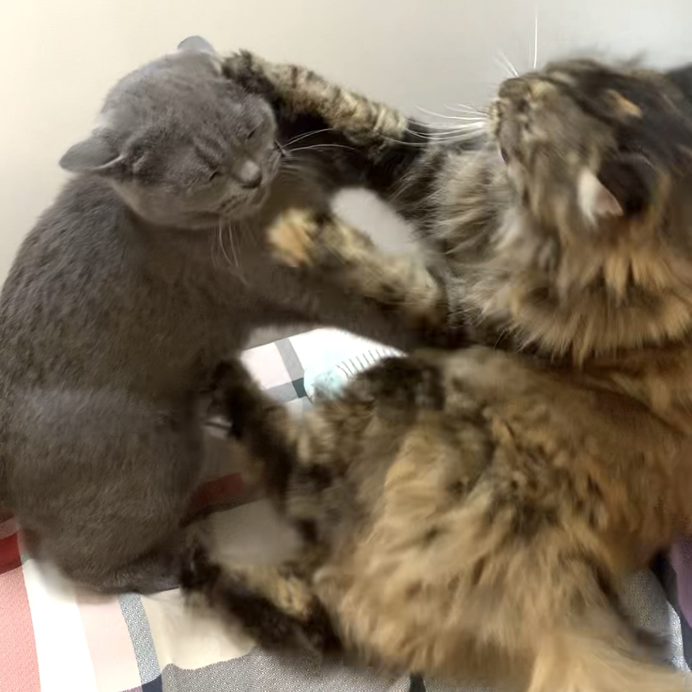
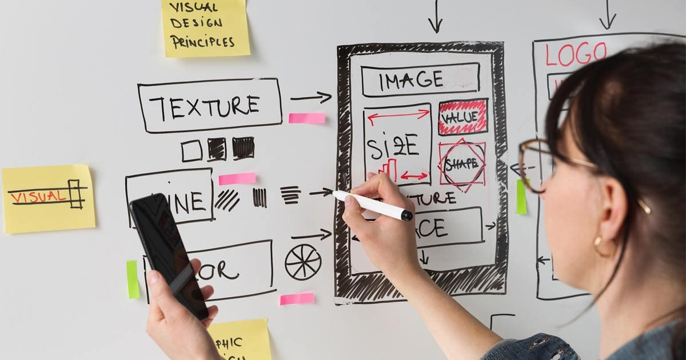

Home
About me
Hello! Nice to meet you!
My full name is Thi Ngan Giang Pham, but you can also call me Grace. I'm Vietnamese. I was born on 21st September, 2001.
(This is my first photo in Canada)
I graduated with a Bachelor's degree in Languages; however, I want to pursue my passion for design. Therefore, I decided to move to Canada for my study. This is my first time studying abroad, so I miss home a lot. Currently, my mom is helping take care of my two beloved cats: one is a British short-haired cat, and the other is a Siberian cat.
(They always fight each other)
My dream
As mentioned above, I have a strong passion for design. That's why I chose the Interactive Media Design program at AC because it offers a wide range of courses in various fields such as Photography, Graphic Design, UI/UX Design,... I think I will explore the role of a UX designer in the future. Why? Because I find this position really cool!
However, my coding skill is still weak, and I always feel very self-conscious about myself. I will try my best to improve it. There is a saying that I always keep it in mind to motivate myself:
"Life is like riding a bicycle. To keep your balance, you must keep moving." - Albert Einstein.
My hobbies
I have many hobbies, but most of them are related to art:
- Drawing
- Playing piano
- Painting
- Cooking